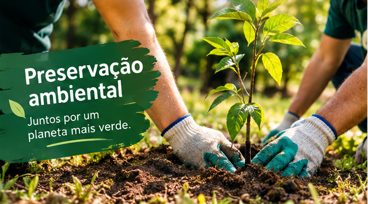
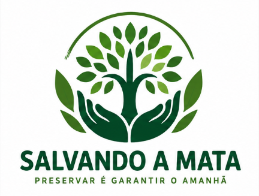
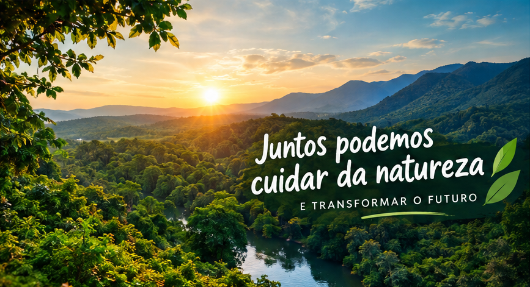
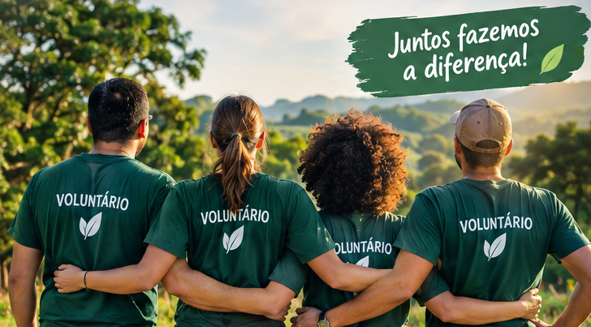

Preservação ambiental
Desenvolvemos ações para proteger áreas verdes e incentivar a preservação da natureza.


Juntos podemos cuidar da natureza e transformar o futuro.
Quero ser voluntárioA Salvando a Mata é uma organização criada para promover a preservação do meio ambiente, incentivar ações sustentáveis e conscientizar a comunidade sobre a importância das florestas.

Desenvolvemos ações para proteger áreas verdes e incentivar a preservação da natureza.

Pessoas podem participar de campanhas e ações em benefício do meio ambiente.